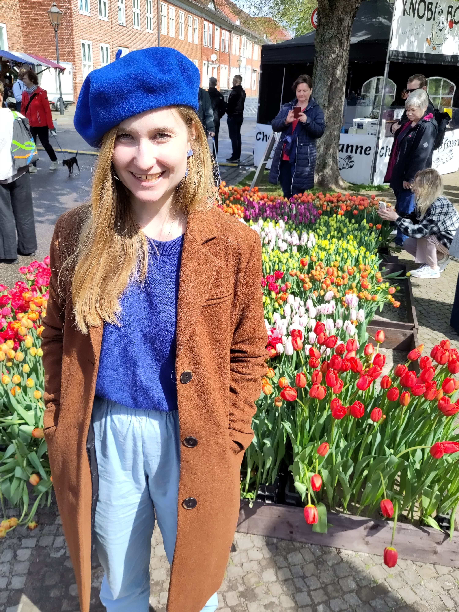

Hi there! I am a doctoral researcher at Kiel University and the WZB Social Science Center.
As a migration economist, I collect and analyse original quantitative data from representative household surveys to answer questions about who migrates where and why. I focus on the role of communities, including contemporary networks and those spanning generations, in shaping society's adaptation to challenges and hardships.
Previously, I worked on price elasticities for different senior care services at the Bureau d'Economie Théorique et Appliquée (BETA) in Nancy and evaluated governental climate action plans at the Ökoinstut e.V. in Berlin.
Email: tamara.bogatzki@wzb.eu